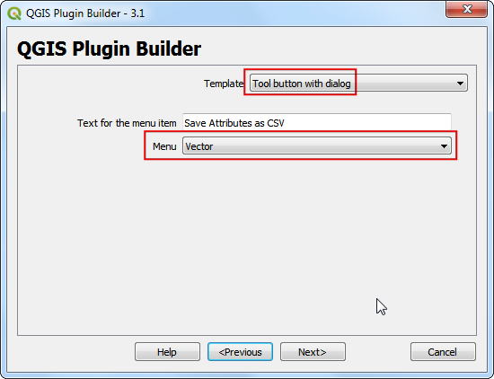
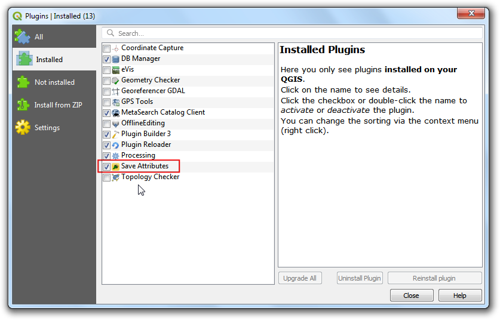

محاسبه طول خط و آمار (QGIS3)¶
QGIS توابع و برنامه های داخلی برای محاسبه خصوصیات مختلف بر اساس هندسه عارضه- مانند طول ، مساحت ، محیط و غیره دارد. این آموزش نحوه استفاده از ابزار Add geometry attributess را برای افزودن ستونی با مقدار اندازه گیری طول هر عارضه نشان می دهد.
نمای کلی تمرین¶
با توجه به یک لایه چند خطی راه آهن در آمریکای شمالی ، ما طول کل راه آهن در ایالات متحده را تعیین خواهیم کرد.
مهارت های دیگری که خواهید آموخت¶
استفاده از عبارات برای فیلتر کردن عارضه ها.
استفاده از پنل Statistics رای محاسبه و مشاهده آمار ستون ها.
اخذ داده¶
پایگاه داده های زمبن طبیعی Natural Earth داده خطی مسیر ریلی راه آهن ها را دارد.
Download the North America supplement zip file from the portal.
برای راحتی کار ، می توانید مستقیماً یک کپی از مجموعه داده را از لینک زیر بارگیری کنید:
ne_10m_railroads_north_america..zip
Data Source [NATURALEARTH]
مراحل¶
فایل
ne_10m_railroads_north_america.zipرا در پنل مرورگر Browser i پیدا کنید و فایلne_10m_railroads_north_america.shpبه محیط پنجره اصلی بکشید و بندازید.

یک لایه جدید
ne_10m_railroads_north_americaمشاهده خواهید کرد که در پنل فهرست لایه ها ` : guilabel: "Layers" بارگذاری شده است. خواهید دید که این لایه دارای خطوطی است که نشان دهنده مسیر راه آهن برای کل آمریکای شمالی است. حال ، بیایید طول هر ویژگی خط را محاسبه کنیم. به منوی جعبه برویید.

برنامه را جستجو وپیدا کنید. برای راه اندازی آن دوبار کلیک کنید.

در کادر محاوره ای افزودن خصوصیات هندسی Add Geometry Attributes لایه برداری
ne_10m_railroads_north_americaبه عنوان لایه ورودی : guilabel: "Input layer" انتخاب کنید. سیستم مرجع مختصات لایه ورودی (CRS) * EPSG: 4326 WGS84 * است. در این CRS * جغرافیایی است مختصات آن عرض و طول جغرافیایی ، حالت بیضوی WGS84 و واحد اندازه گیری آن نیز درجه ست. از آنجا که طول و عرض جغرافیایی طول استاندارد ندارند ، با استفاده از توابع هندسه مسطحاتی نمی توانید فاصله ها یا مساحت ها را به طور دقیق اندازه بگیرید. خوشبختانه ، QGIS روش بهتری برای محاسبه فواصل با استفاده از هندسه بیضوی ارائه می دهد ، که دقیق ترین روش برای لایه هایی است که مناطق وسیعی مانند این را در بر می گیرد.؛ گزینهEllipsoidalرا به عنوان گزینه محاسبه Calculate using انتخاب کنید. دکمه :guilabel:`Run`کلیک کنیدتا `اجرا شود. پس از پایان فرایند، روی دکمه guilabel:`Close`کلیک کنید.

توجه
اگر لایه ورودی شما سیستم مخنصات پروژکشنی باشد ، می توانید گزینه "Layer CRS" را برای محاسبه انتخاب کنید. سیستم های مختصات پروژگشن محلی یا منطقه ای برای به حداقل رساندن اعوجاجات منطقه مورد نظرشان طراحی شده اند ، بنابراین برای چنین محاسباتی دقیق تر هستند.
یک لایه جدید با عنوان`Added geom info`` در پنل فهرست لایه ها : guilabel: "Layers" بارگذاری می شود. این یک کپی از لایه ورودی است که یک ستون جدید برای اندازه طول فاصله اضافه شده است. روی لایه Added geom info` کلیک راست کرده و گزینه :guilabel:`Open Attribute Table`را انتخاب کنید تا جدول توصیفی آن باز شود.

توجه
ابزار * Add Geometry Attribute * بسته به اینکه لایه ورودی نقاط ، چند خط یا چند ضلعی باشد ، ویژگیهای مختلفی را اضافه می کند. برای جزئیات بیشتر به "مستندات " QGIS documentation مراجعه کنید.
در Attribute Table ستونی جدید به نام distance مشاهده خواهید کرد. این شامل طول هر ویژگی خط بر حسب * متر * است. همچنین توجه داشته باشید که ستون sov_a3 که حاوی کد کشور برای هر عارضه است. پنجره :guilabel:`Attribute Table`را ببندید.

اکنون که اندازه طول ه خطوط راه آهن محاسبه شده است ، می توانیم آنها را جمع کنیم تا کل طول راه آهن را پیدا کنیم. اما از آنجا که ما مسئل فقط کل طول راه آهن در ایالات متحده احتیاج داریم ، باید فقط خطوط موجود در ایالات متحده استفاده کنیم. ما می توانیم از مقدار کد کشور در ستون ** sov_a3 ** برای فیلتر کردن لایه استفاده کنیم. روی لایه "Added geom info" کلیک راست کرده و گزینه: guilabel: "Filter" را انتخاب کنید.

در کادر محاوره ای : Query Builder عبارت زیر را وارد کرده و بر دکمه :guilabel:`OK`کلیک کنید.
"sov_a3" = 'USA'
یک آیکون Filter در کنار لایه "Add geom info" در فهرست لایه ها Layers`مشاهده منشان داده که نشان می دهد یک فیلتر به لایه اعمال شده است. همچنین می توانید بصورت بصری تأیید کنید که این لایه اکنون شامل فقط بخشهای خطوط آهن ایالات متحده است. اکنون ما آماده محاسبه مجموع طول هستیم. جهت نمایش خلاصه آماری روی دکمه: :guilabel:`Show statistical summary در ابزار Attributes Toolbar لیک کنید.

A new Statistics panel will open. Select
Added geom infolayer andlengthcolumn.

آمار مختلفی را در صفحه مشاهده خواهید کرد. واحد آماری همان واحدهای ستون``length`` - ** متر ** است. بیایید محاسبه را تغییر دهیم تا به جای آن از ** کیلومتر ** **kilometers**استفاده کنیم. روی نماد:guilabel:Expression`در کنار منوی کشویی فیلدها در پانل: :guilabel:`Statistics کلیک کنید.

عبارت زیر را در کادر Expression Dialog وارد کنید که اندازه طول را به کیلومتر تبدیل می کند.
length / 1000
مقدار Sum نمایش داده شده کل طول راه آهن در ایالات متحده است.

If you want to give feedback or share your experience with this tutorial, please comment below. (requires GitHub account)